Danysa is the 15th hero that you will unlock at stage 1550.
Abilities
| Charge | |
|---|---|
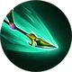 |
Attack your target with your spear for 490% of your damage. The attack speed of the target hit by the Charge is reduced by 80% for 3 seconds. Cost: 30 Rage. |
{kind=link}
| Dodge | |
|---|---|
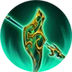 |
Force all enemies to attack you and increase your dodge by 40% for 30 seconds. 50 seconds cooldown. Cost: 45 Rage. |
{kind=link}
| Protect and destroy | |
|---|---|
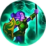 |
Increases the critical damage of your party by 100% and their dodge by 10% for 30 seconds. Cost: 60 Rage. |
{kind=link}
Gear
| Weapon | Chest | Boots | Ring | |
|---|---|---|---|---|
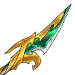 |
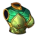 |
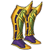 |
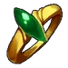 | |
| Wrist | Shoulder | Belt | Relic | |
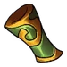 |
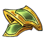 |
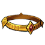 |
||
| Ankh | Rune | Idol | ||
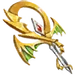 |
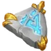 |
|||
| Talisman | Necklace | Trinket | ||
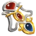 |
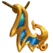 |
{kind=link}
{kind=link}
{kind=link}
{kind=link}
{kind=link}
{kind=link}
{kind=link}
{kind=link}
{kind=link}
{kind=link}
{kind=link}
{kind=link}
{kind=link}
{kind=link}
Biography
The Herold of Kramatak
{kind=link}
{kind=link}
The herold of Kramatak
It is a very old belief indeed, that the wrath of Gods can reach the mortal realm. The growl of thunderstorms, the raging flashes of lightning, the violent shaking of the ground, all echoes of supernatural anger that manages, somehow, to reach the earth. Ordinary folk believe that their actions are to blame; others, that something in their lives must change, to calm the Gods. This is not the way of the Orc.
Orc are not ordinary. To them, great disasters in their homeland, the Cauldron, are a call to battle; their Gods scream to them their thirst for blood, and the Orcs must provide it. When the ground shakes and the sky trembles, an Orc is nothing but an attendant who must fill his masters’ cups with red. When the Great Storm came, they knew that blood must flow in great waves.
All across the Orcish lands, in every tribe and village, there is but one tradition in such a time; take what is yours, but fight to the death for it. There is no exception, even for foreigners - and the only foreigners in the Cauldron are prisoners of war. A prisoner may earn their life, if they can take Orcish one. Many Orcs, even those weak and old, welcome duels with prisoners. After all, for a well-equipped Orc warrior, a prisoner with broken armor and a rusty sword is nothing but an easy opportunity to spill blood for the Gods. Danysa was one such opportunity.
Some weeks before the Great Storm, a routine Elf convoy from Celenis to Xandor sank near the coast of Thal Badur. Strong winds had forced it to sail uncontrolled into unknown waters until it crashed on shallow rocks. It was a disaster; the ship’s hull was broken, every deck was flooded and its sails burned in lightning fire. The Elves swam, each in different directions, to ensure some of them survived - a sacrifice, for the greater good. Danysa, the ship’s security officer, did her duty well and swam until she couldn’t, and darkness swallowed her vision.
She never found out how long she drifted, but awoke after a sharp prod to her face. For a moment, feeling the sun warm her cheeks, she thought a fairy was waking her for her final walk to the Eternal Forest. As she opened her eyes, her vision adjusted. Not a fairy, but a large brutish Orc warrior shouting.
"This one’s alive, take her with the others". Danysa felt her body jerk from the sandy ground and get thrown into a cart. Before she fainted again, she saw that only a handful of her shipmates had survived.
Danysa would never forget the first nights of horror, watching helplessly as the hurt and wounded died, to the sounds of the prison warden’s laughter. The few that survived the imprisonment at Thal Badur were to be taken to the Warchief, for their fate to be decided. Danysa knew that the Warchief would not decide if they would be killed, only how - there is no room for mercy in Orc culture, especially during a war. They spend weeks in the dungeon, until it was their turn to walk through the tribe to the War Tent. It was luck, or maybe something else, that with each step they took the skies darkened and clouds twisted into black storm-bringers. The Orcs shouted in excitement as the Cauldron darkened. The Gods wanted blood, and there were fresh prisoners to provide it. The confused and frightened Elves could only watch as every Orc in the tribe turned to the great iron drum above the War Tent. They began to chant to the name of their lightning God.
"KRAMATAK! KRAMATAK! KRAMATAK!"
A few moments later the drum was struck by lightning. The deafening sound roared through Thal Badur.
Danysa barely realized what was happening before she was cut free by the prison warden.
"Fight for your freedom if you want it, Elf!"
Someone threw a rusty sword at her feet, and the same was happening to the others. Some Orcs were killing each other, some screamed in the ecstasy of the bloodletting; but most had drawn their weapons and hungrily eyed the weakened prisoners. Three of Danysa’s shipmates were killed in seconds.
Like all Elven officers, she was at her core a survivor - no matter how tired or desperate, her mind would think with logic. Her instinct told her that fighting the large, brutish Orcs in close combat with a sword was a grave mistake. She dodged a swing as the first Orc came at her, rolling to her fallen comrade and grabbing the old spear from his dead hands. When she stood, the Orcs shouted with joy.
"Kramatak has brought us good fighters! Spill their blood with honor!" To Orcs, a weak prisoner was an appetizer - but a good fight was the main course.
With each other, the Orcs fought fast - not for speed, but for sport. The Lightning God Kramatak had struck the Great Iron Drum, and they would enjoy pushing their body to its limits. Dodging more swings and landing some blows with her spear, Danysa knew they were fighting her differently. She was being tired out with heavy hits, forced into a game of endurance that she could not win. Her attackers were saving their strength for what they thought would be the real, Orc to Orc fights later. Her tactics were simple, but clever. She continued to dodge, avoiding blocking their attacks. She would move slightly, but with purpose, to save her strength and exhaust her opponents. Her Elven agility could be used to her advantage. Up above, the Great Storm swirled, faster by the minute.
Most Orcs had grown tired of wasting time, trying to hit something as unimportant as a prisoner, and left to fight elsewhere. The only Orc bound by the fight was her prison warden, growing increasingly furious. He was intent to finish it in one blow, but he became steadily more tired, aching and sweating at swings that only hit the hard ground. The prison warden roared and raised his sword for a final blow, but had become to slow for the Elf - Danysa stepped inside his space and slammed her shield against his head. The Orc stumbled dizzily, but Danysa kept her distance - she had to be sure he was done for first.
The Orcs were ecstatic. The electricity from the clouds, mixing with the metallic taste of blood was driving them into a primitive madness. The Great Drum struck again, and the warden was knocked back into steadiness. As the Orcs screamed for Kramatak, he charged through the rain toward Danysa. She screamed at the top of the shrieking echo of her Elven voice and charged back.
The warden understood that the Kramatak would have his blood, as she feinted into a dodge at the last step before they touched. A step to the right and a whirling leap later, the Orc fell to the ground with a pierced shoulder. As Danysa turned to look at him, thunder cracked and lightning struck the rusted weapon. The warden burst into flaming light, and a flash later, all that was left was ash. Exhausted, darkness overtook her as she slumped to the ground. Her last thought was wondering if she were dying.
Alas, the law of the Gods is above the law of living creatures. Only a fool would misinterpret the word of Kramatak, and he had clearly spoken.Danysa, treated as a war hero and a herald of Kramatak, was nursed to health. When she could walk, the Warchief himself took her to the entrance of the War Tent, where facing the every great warrior of the tribe he exclaimed,
"Danysa, the first Elven herald of Kramatak! You have earned your freedom, and the respect of our people. To Orc, you are sister."
He placed around her neck a medallion, made from the melted metal of her schackles.
"Make your wish, and I will grant it as if it were a command of Kramatak himself."
Humble and loyal to her kind as Danysa was, she replied with no hesitation.
"Great Warchief, you honor me. All I wish is that you set my shipmates set free and respect them as if you would a shipmate of Kramatak, as he sails his skies of thunder."
"Then so be it."
In minutes, the Elves were set free and leaving behind them the last guardpost of the Orcish capital. All of them knew that if they ever had a leader, it was Danysa. They would follow her to Xandor and beyond.
The Country Girl


{kind=link}
The country girl
Like all elves, Danysa is one with the nature. So much so, that despite her accolades as a warrior and herald of bloodthirsty Kramatak, sometimes she disappears quietly, as only the elf would do, in the woods for a few days. And only a few trusted companions would know, that she goes to tend to her "ranch", as she calls it. All crops and animals can do with a touch of elven magic, but for them to truly thrive, they need a touch of a loving hand.